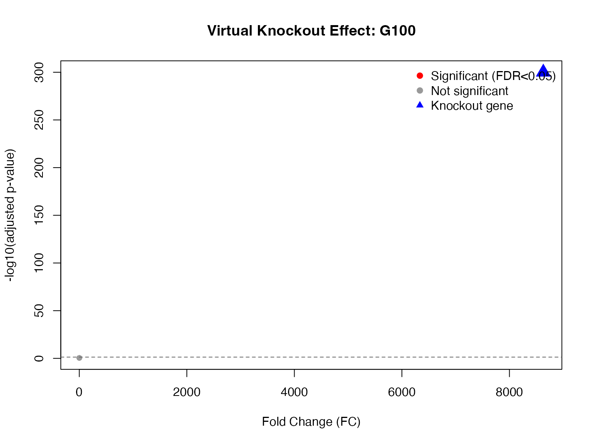

Introduction
scTenifoldKnk is an R package for performing in-silico knockout experiments using single-cell RNA sequencing data. It allows researchers to predict the effects of gene knockouts without performing actual wet-lab experiments.
Key Features
- Virtual Knockout: Simulate gene knockouts computationally
- Gene Regulatory Network: Construct single-cell gene regulatory networks (scGRN)
- Differential Regulation: Identify genes affected by virtual knockout
- High Performance: C++ acceleration with Eigen library
- Cross-Platform: Works on macOS, Linux, and Windows
Installation
# Install from GitHub
devtools::install_github("Zaoqu-Liu/scTenifoldKnk")Quick Example
Load Package and Data
library(scTenifoldKnk)
library(Matrix)
# Load example data
data_path <- system.file("single-cell/example.csv", package = "scTenifoldKnk")
scRNAseq <- read.csv(data_path, row.names = 1)
scRNAseq <- as.matrix(scRNAseq)
# Check data dimensions
cat("Genes:", nrow(scRNAseq), "\n")
#> Genes: 100
cat("Cells:", ncol(scRNAseq), "\n")
#> Cells: 3000Run Virtual Knockout Analysis
# Perform virtual knockout of gene G100
result <- scTenifoldKnk(
countMatrix = scRNAseq,
gKO = "G100",
qc_minLSize = 0, # Skip library size filter for demo data
nc_nNet = 5, # Number of networks
nc_nCells = 100, # Cells per network
nc_nComp = 3, # Principal components
td_K = 3, # Tensor rank
verbose = TRUE
)
#> === scTenifoldKnk: Virtual Knockout Analysis ===
#>
#> Step 1/6: Quality control...
#> Retained 100 genes and 2837 cells after QC
#>
#> Step 2/6: Constructing gene regulatory networks...
#> Using sequential processing (dataset size doesn't warrant parallel overhead)
#> Generating 5 networks (100 genes, 100 cells/network, 3 PCs)...
#> Building networks sequentially...
#> Network 1/5
#> Successfully generated 5 networks
#>
#> Step 3/6: Tensor decomposition...
#> Tensor decomposition complete
#>
#> Step 4/6: Performing virtual knockout...
#> Gene 'G100' knocked out
#>
#> Step 5/6: Manifold alignment...
#> Manifold alignment complete
#>
#> Step 6/6: Differential regulation analysis...
#> Found 1 significantly affected genes (FDR < 0.05)
#>
#> === Analysis complete ===View Results
# Top affected genes
head(result$diffRegulation, 10)
#> gene distance Z FC p.value p.adj
#> G100 G100 4.990531e-04 -8.4673376 8629.867170 0.0000000 0.0000000
#> G31 G31 5.715819e-06 -0.9400583 1.132055 0.2873374 0.3455271
#> G29 G29 5.680743e-06 -0.8468035 1.118204 0.2903056 0.3455271
#> G24 G24 5.671233e-06 -0.8212213 1.114463 0.2911139 0.3455271
#> G38 G38 5.660141e-06 -0.7912209 1.110108 0.2920585 0.3455271
#> G39 G39 5.657812e-06 -0.7848995 1.109195 0.2922571 0.3455271
#> G23 G23 5.636371e-06 -0.7263309 1.100803 0.2940899 0.3455271
#> G18 G18 5.629403e-06 -0.7071530 1.098083 0.2946871 0.3455271
#> G19 G19 5.622945e-06 -0.6893163 1.095565 0.2952414 0.3455271
#> G34 G34 5.614790e-06 -0.6667017 1.092390 0.2959423 0.3455271Visualize Results
# Volcano-style plot
dr <- result$diffRegulation
dr$log10_padj <- -log10(dr$p.adj + 1e-300)
dr$significant <- dr$p.adj < 0.05
# Create plot
plot(dr$FC, dr$log10_padj,
pch = 19,
col = ifelse(dr$significant, "red", "gray60"),
xlab = "Fold Change (FC)",
ylab = "-log10(adjusted p-value)",
main = "Virtual Knockout Effect: G100",
cex = 0.8)
# Highlight knockout gene
ko_idx <- which(dr$gene == "G100")
points(dr$FC[ko_idx], dr$log10_padj[ko_idx],
pch = 17, col = "blue", cex = 2)
# Add legend
legend("topright",
legend = c("Significant (FDR<0.05)", "Not significant", "Knockout gene"),
col = c("red", "gray60", "blue"),
pch = c(19, 19, 17),
bty = "n")
# Add threshold line
abline(h = -log10(0.05), lty = 2, col = "gray40")
Output Structure
The scTenifoldKnk function returns a list with the
following components:
| Component | Description |
|---|---|
tensorNetworks$WT |
Wild-type tensor network |
tensorNetworks$KO |
Knockout tensor network |
manifoldAlignment |
Manifold alignment matrix |
diffRegulation |
Differential regulation results |
Differential Regulation Table
knitr::kable(head(result$diffRegulation),
caption = "Top Differentially Regulated Genes",
digits = 4)| gene | distance | Z | FC | p.value | p.adj | |
|---|---|---|---|---|---|---|
| G100 | G100 | 5e-04 | -8.4673 | 8629.8672 | 0.0000 | 0.0000 |
| G31 | G31 | 0e+00 | -0.9401 | 1.1321 | 0.2873 | 0.3455 |
| G29 | G29 | 0e+00 | -0.8468 | 1.1182 | 0.2903 | 0.3455 |
| G24 | G24 | 0e+00 | -0.8212 | 1.1145 | 0.2911 | 0.3455 |
| G38 | G38 | 0e+00 | -0.7912 | 1.1101 | 0.2921 | 0.3455 |
| G39 | G39 | 0e+00 | -0.7849 | 1.1092 | 0.2923 | 0.3455 |
Next Steps
- See the Algorithm Theory vignette for detailed methodology
- See the Visualization Guide for advanced plotting
- See the Advanced Usage for parameter tuning
Session Info
sessionInfo()
#> R version 4.4.0 (2024-04-24)
#> Platform: aarch64-apple-darwin20
#> Running under: macOS 15.6.1
#>
#> Matrix products: default
#> BLAS: /Library/Frameworks/R.framework/Versions/4.4-arm64/Resources/lib/libRblas.0.dylib
#> LAPACK: /Library/Frameworks/R.framework/Versions/4.4-arm64/Resources/lib/libRlapack.dylib; LAPACK version 3.12.0
#>
#> locale:
#> [1] C
#>
#> time zone: Asia/Shanghai
#> tzcode source: internal
#>
#> attached base packages:
#> [1] stats graphics grDevices utils datasets methods base
#>
#> other attached packages:
#> [1] Matrix_1.7-4 scTenifoldKnk_2.1.0
#>
#> loaded via a namespace (and not attached):
#> [1] cli_3.6.5 knitr_1.51 rlang_1.1.7 xfun_0.56
#> [5] otel_0.2.0 textshaping_1.0.4 jsonlite_2.0.0 htmltools_0.5.9
#> [9] ragg_1.5.0 sass_0.4.10 rmarkdown_2.30 grid_4.4.0
#> [13] evaluate_1.0.5 jquerylib_0.1.4 MASS_7.3-65 fastmap_1.2.0
#> [17] yaml_2.3.12 lifecycle_1.0.5 compiler_4.4.0 RSpectra_0.16-2
#> [21] fs_1.6.6 htmlwidgets_1.6.4 Rcpp_1.1.1 lattice_0.22-7
#> [25] systemfonts_1.3.1 digest_0.6.39 R6_2.6.1 parallel_4.4.0
#> [29] bslib_0.9.0 tools_4.4.0 pkgdown_2.1.3 cachem_1.1.0
#> [33] desc_1.4.3